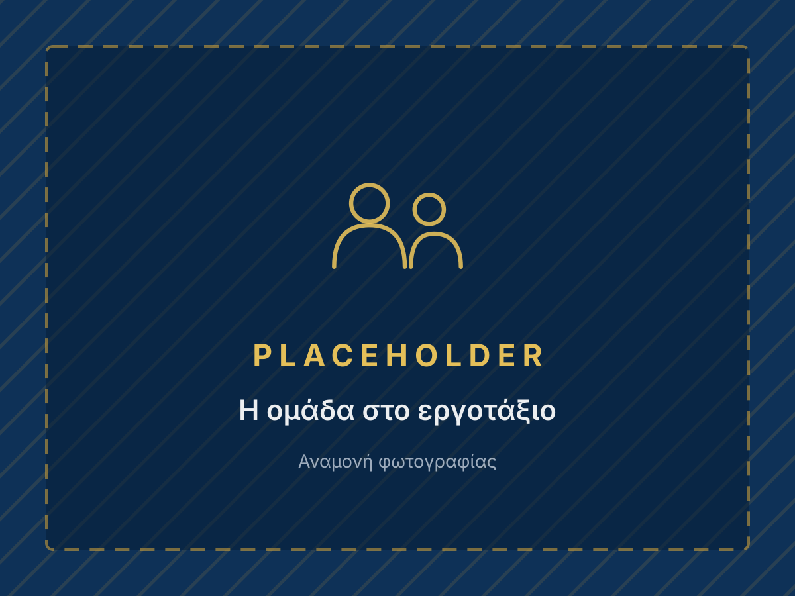

Κατασκευή Κτηρίων
Από τα θεμέλια έως την παράδοση, με μελέτη, άδειες και τεχνική επίβλεψη μηχανικών.
Κατασκευή · Ανακαίνιση · Αντιπαροχή
Κατασκευή, ανακαίνιση, αντιπαροχή, διαμόρφωση περιβάλλοντος χώρου, έργα δημοσίου, οδοποιία και ενεργειακή αναβάθμιση.
Οι υπηρεσίες μας
Από τα θεμέλια έως την παράδοση, με μελέτη, άδειες και τεχνική επίβλεψη μηχανικών.
Ανακαινίσεις κατοικιών και καταστημάτων με σύγχρονες λύσεις και 12μηνη εγγύηση.
Αξιοποίηση της ακίνητης περιουσίας σας με διαφάνεια και αμοιβαίο όφελος.
Ολοκληρωμένες λύσεις για εξωτερικούς χώρους, με αισθητική και λειτουργικότητα.
Υλοποίηση τεχνικών έργων και υποδομών με συνέπεια και τεχνογνωσία.
Θερμομονώσεις, κουφώματα και αντλίες θερμότητας για μειωμένη κατανάλωση.
Γιατί να μας επιλέξετε
Η TOPCIU Ο.Ε. ιδρύθηκε το 2010 με σκοπό την κατασκευή δημοσίων και ιδιωτικών τεχνικών έργων, με έδρα τη Νέα Μάκρη Αττικής.
Στελεχώνεται από πολιτικό μηχανικό και ηλεκτρολόγο μηχανικό, διαθέτει ιδιόκτητο μηχανολογικό εξοπλισμό και έχει εμπειρία σε σύνθετα τεχνικά έργα: κτηριακά, οδοποιία, υδραυλικά και ενεργειακές παρεμβάσεις.

Πώς δουλεύουμε
Ξεκάθαρο συμφωνητικό, σωστά εργαλεία, εξειδικευμένο τεχνικό προσωπικό και τήρηση χρονοδιαγραμμάτων.
Καταγραφή χώρου, αναγκών και τεχνικών περιορισμών.
Λύσεις, υλικά, χρόνος και στάδια εργασιών.
Συντονισμός ειδικοτήτων και καθημερινή τεχνική οργάνωση.
Ολοκλήρωση με εγγύηση καλής εκτέλεσης εργασιών.
Επικοινωνήστε μαζί μας για μια δωρεάν εκτίμηση.